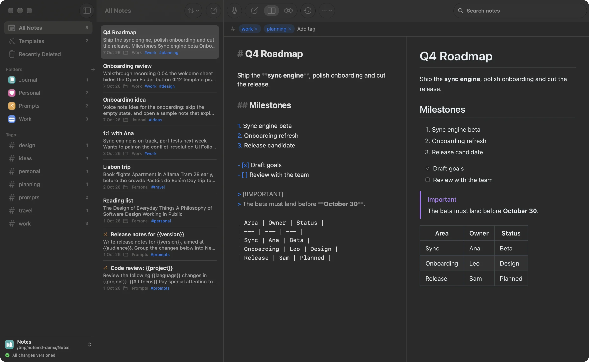

NoteMD
Markdown notes,
versioned automatically.
All changes versioned
## Plain files
Your notes are just Markdown files.
Folders, tags and search. As many vaults as you like.

## Versioned
Every edit,
safely in git.
safely in git.
Saved as you type, committed when you pause. Compare and restore any version.

## Templates
Reusable prompts,
as forms.
as forms.
NoteMD

## Voice notes
Say it.
Read it.
Read it.
Record into a note and transcribe on-device. The audio never leaves your Mac.

Recording
0:00
## How templates work
Write it once. Fill it in. Copy the prompt.
1 Write a template
---
params:
- name: language
type: choice
- name: files
type: list
- name: strict
type: toggle
---
Review these {{language}} changes:
{{#each files}}
- {{.}}
{{/each}}
{{#if strict}}Be strict.{{/if}}
2 Fill in the form
Language
Choose… ⌄
Files
One item per line
Be strict
3 Copy the prompt
Review these Swift changes:
- Sources/Editor.swift
- Sources/Preview.swift
Be strict.
NoteMD
Markdown notes, versioned automatically.